Vincent Willem van Gogh (30 March 1853 - 29 July 1890) was a Dutch Post-Impressionist painter who posthumously became one of the most famous and influential figures in Western art history. In a decade, he created about 2,100 artworks, including around 860 oil paintings, most of which date from the last two years of his life. They include landscapes, still lifes, portraits, and self-portraits, and are characterised by bold colours and dramatic, impulsive and expressive brushwork that contributed to the foundations of modern art. Not commercially successful, he struggled with severe depression and poverty, eventually leading to his suicide at age thirty-seven.
Born into an upper-middle-class family, Van Gogh drew as a child and was serious, quiet, and thoughtful. As a young man, he worked as an art dealer, often traveling, but became depressed after he was transferred to London. He turned to religion and spent time as a Protestant missionary in southern Belgium. He drifted in ill health and solitude before taking up painting in 1881, having moved back home with his parents. His younger brother Theo supported him financially; the two kept a long correspondence by letter. His early works, mostly still lifes and depictions of peasant labourers, contain few signs of the vivid colour that distinguished his later work. In 1886, he moved to Paris, where he met members of the avant-garde, including Émile Bernard and Paul Gauguin, who were reacting against the Impressionist sensibility. As his work developed he created a new approach to still lifes and local landscapes. His paintings grew brighter as he developed a style that became fully realised during his stay in Arles in the South of France in 1888. During this period he broadened his subject matter to include series of olive trees, wheat fields and sunflowers.
Van Gogh suffered from psychotic episodes and delusions and though he worried about his mental stability, he often neglected his physical health, did not eat properly and drank heavily. His friendship with Gauguin ended after a confrontation with a razor when, in a rage, he severed part of his own left ear. He spent time in psychiatric hospitals, including a period at Saint-Rémy. After he discharged himself and moved to the Auberge Ravoux in Auvers-sur-Oise near Paris, he came under the care of the homeopathic doctor Paul Gachet. His depression persisted, and on 27 July 1890, Van Gogh is believed to have shot himself in the chest with a revolver, dying from his injuries two days later.
Van Gogh was commercially unsuccessful during his lifetime, and he was considered a madman and a failure. As he became famous only after his suicide, he came to be seen as a misunderstood genius in the public imagination. His reputation grew in the early 20th century as elements of his style came to be incorporated by the Fauves and German Expressionists. He attained widespread critical and commercial success over the ensuing decades, and is remembered as an important but tragic painter whose troubled personality typifies the romantic ideal of the tortured artist. Today, Van Gogh's works are among the world's most expensive paintings to have ever sold, and his legacy is honoured by a museum in his name, the Van Gogh Museum in Amsterdam, which holds the world's largest collection of his paintings and drawings.
Letters
The most comprehensive primary source on Van Gogh is the correspondence between him and his younger brother, Theo. Their lifelong friendship, and most of what is known of Vincent's thoughts and theories of art, are recorded in the hundreds of letters they exchanged from 1872 until 1890. Theo van Gogh was an art dealer and provided his brother with financial and emotional support as well as access to influential people on the contemporary art scene.
Theo kept all of Vincent's letters to him; Vincent kept a few of the letters he received. After both had died, Theo's widow Johanna arranged for the publication of some of their letters. A few appeared in 1906 and 1913; the majority were published in 1914. Vincent's letters are eloquent and expressive and have been described as having a "diary-like intimacy", and read in parts like autobiography. The translator Arnold Pomerans wrote that their publication adds a fresh dimension to the understanding of Van Gogh's artistic achievement, an understanding granted to us by virtually no other painter.
There are more than 600 letters from Vincent to Theo and around 40 from Theo to Vincent. There are 22 to his sister Wil, 58 to the painter Anthon van Rappard, 22 to Émile Bernard as well as individual letters to Paul Signac, Paul Gauguin and the critic Albert Aurier. Some are illustrated with sketches. Many are undated, but art historians have been able to place most in chronological order. Problems in transcription and dating remain, mainly with those posted from Arles. While there Vincent wrote around 200 letters in Dutch, French and English. There is a gap in the record when he lived in Paris as the brothers lived together and had no need to correspond.
The highly paid contemporary artist Jules Breton was frequently mentioned in Vincent's letters. In 1875 letters to Theo, Vincent mentions he saw Breton, discusses the Breton paintings he saw at a Salon, and discusses sending one of Breton's books but only on the condition that it be returned. In a March 1884 letter to Rappard he discusses one of Breton's poems that had inspired one of his own paintings. In 1885 he describes Breton's famous work The Song of the Lark as being fine. In March 1880, roughly midway between these letters, Van Gogh set out on an 80-kilometre trip on foot to meet with Breton in the village of Courrières; however, he was apparently intimidated by Breton's success and/or the high wall around his estate. He turned around and returned without making his presence known. It appears Breton was unaware of Van Gogh or his attempted visit. There are no known letters between the two artists and Van Gogh is not one of the contemporary artists discussed by Breton in his 1891 autobiography Life of an Artist.
Life
Early Years
Vincent Willem van Gogh was born on 30 March 1853 in Groot-Zundert, in the predominantly Catholic province of North Brabant in the Netherlands. He was the oldest surviving child of Theodorus van Gogh (1822-1885), a minister of the Dutch Reformed Church, and his wife Anna Cornelia Carbentus (1819-1907). Van Gogh was given the name of his grandfather and of a brother stillborn exactly a year before his birth. Vincent was a common name in the Van Gogh family. The name had been borne by his grandfather, the prominent art dealer Vincent (1789-1874), and a theology graduate at the University of Leiden in 1811. This Vincent had six sons, three of whom became art dealers, and may have been named after his own great-uncle, a sculptor (1729-1802).
Van Gogh's mother came from a prosperous family in The Hague, and his father was the youngest son of a minister. The two met when Anna's younger sister, Cornelia, married Theodorus's older brother Vincent (Cent). Van Gogh's parents married in May 1851 and moved to Zundert. His brother Theo was born on 1 May 1857. There was another brother, Cor, and three sisters: Elisabeth, Anna, and Willemina (known as "Wil"). In later life, Van Gogh remained in touch only with Willemina and Theo. Van Gogh's mother was a rigid and religious woman who emphasised the importance of family to the point of claustrophobia for those around her. Theodorus's salary was modest, but the Church supplied the family with a house, a maid, two cooks, a gardener, a carriage and horse, and Anna instilled in the children a duty to uphold the family's high social position.
Van Gogh was a serious and thoughtful child. He was taught at home by his mother and a governess and in 1860 was sent to the village school. In 1864, he was placed in a boarding school at Zevenbergen, where he felt abandoned, and he campaigned to come home. Instead, in 1866 his parents sent him to the middle school in Tilburg, where he was deeply unhappy. His interest in art began at a young age. He was encouraged to draw as a child by his mother, and his early drawings are expressive, but do not approach the intensity of his later work. Constant Cornelis Huijsmans, who had been a successful artist in Paris, taught the students at Tilburg. His philosophy was to reject technique in favour of capturing the impressions of things, particularly nature or common objects. Van Gogh's profound unhappiness seems to have overshadowed the lessons, which had little effect. In March 1868, he abruptly returned home. He later wrote that his youth was austere and cold, and sterile.
In July 1869 Van Gogh's uncle Cent obtained a position for him at the art dealers Goupil & Cie in The Hague. After completing his training in 1873, he was transferred to Goupil's London branch on Southampton Street and took lodgings at 87 Hackford Road, Stockwell. This was a happy time for Van Gogh; he was successful at work and, at 20, was earning more than his father. Theo's wife later remarked that this was the best year of Vincent's life. He became infatuated with his landlady's daughter, Eugénie Loyer, but was rejected after confessing his feelings; she was secretly engaged to a former lodger. He grew more isolated and religiously fervent. His father and uncle arranged a transfer to Paris in 1875, where he became resentful of issues such as the degree to which the firm commodified art, and he was dismissed a year later.
In April 1876 he returned to England to take unpaid work as a supply teacher in a small boarding school in Ramsgate. When the proprietor moved to Isleworth in Middlesex, Van Gogh went with him. The arrangement did not work out and he left to become a Methodist minister's assistant. His parents had meanwhile moved to Etten; in 1876 he returned home at Christmas for six months and took work at a bookshop in Dordrecht. He was unhappy in the position and spent his time doodling or translating passages from the Bible into English, French and German. He immersed himself in religion and became increasingly pious and monastic. According to his flatmate of the time, Paulus van Görlitz, Van Gogh ate frugally, avoiding meat.
To support his religious conviction and his desire to become a pastor, in 1877 the family sent him to live with his uncle Johannes Stricker, a respected theologian, in Amsterdam. Van Gogh prepared for the University of Amsterdam theology entrance examination; he failed the exam and left his uncle's house in July 1878. He undertook, but also failed, a three-month course at a Protestant missionary school in Laken, near Brussels.
In January 1879 he took up a post as a missionary at Petit-Wasmes in the coal-mining district of Borinage in Belgium. To show support for his impoverished congregation, he gave up his comfortable lodgings at a bakery to a homeless person and moved to a small hut, where he slept on straw. His squalid living conditions did not endear him to church authorities, who dismissed him for undermining the dignity of the priesthood. He then walked the 75 kilometres (47 mi) to Brussels, returned briefly to Cuesmes in the Borinage, but gave in to pressure from his parents to return home to Etten. He stayed there until around March 1880, which caused concern and frustration for his parents. His father was especially frustrated and advised that his son be committed to the lunatic asylum Geel.
Van Gogh returned to Cuesmes in August 1880, where he lodged with a miner until October. He became interested in the people and scenes around him, and he recorded them in drawings after Theo's suggestion that he take up art in earnest. He traveled to Brussels later in the year, to follow Theo's recommendation that he study with the Dutch artist Willem Roelofs, who persuaded him - in spite of his dislike of formal schools of art - to attend the Académie Royale des Beaux-Arts. He registered at the Académie in November 1880, where he studied anatomy and the standard rules of modelling and perspective.
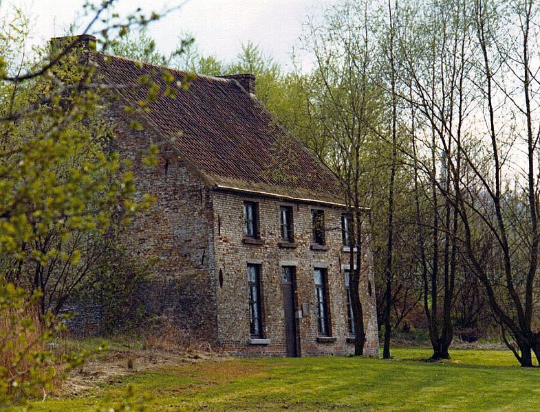
Van Gogh's home in Cuesmes; while there he decided to become an artist
Etten, Drenthe and The Hague
Van Gogh returned to Etten in April 1881 for an extended stay with his parents. He continued to draw, often using his neighbours as subjects. In August 1881, his recently widowed cousin, Cornelia "Kee" Vos-Stricker, daughter of his mother's older sister Willemina and Johannes Stricker, arrived for a visit. He was thrilled and took long walks with her. Kee was seven years older than he was and had an eight-year-old son. Van Gogh surprised everyone by declaring his love to her and proposing marriage. She refused with the words No, nay, never ("nooit, neen, nimmer"). After Kee returned to Amsterdam, Van Gogh went to The Hague to try to sell paintings and to meet with his second cousin, Anton Mauve. Mauve was the successful artist Van Gogh longed to be. Mauve invited him to return in a few months and suggested he spend the intervening time working in charcoal and pastels; Van Gogh returned to Etten and followed this advice.
Late in November 1881, Van Gogh wrote a letter to Johannes Stricker, one which he described to Theo as an attack. Within days he left for Amsterdam. Kee would not meet him, and her parents wrote that his persistence is disgusting. In despair, he held his left hand in the flame of a lamp, with the words: Let me see her for as long as I can keep my hand in the flame. He did not recall the event well, but later assumed that his uncle had blown out the flame. Kee's father made it clear that her refusal should be heeded and that the two would not marry, largely because of Van Gogh's inability to support himself.
Mauve took Van Gogh on as a student and introduced him to watercolour, which he worked on for the next month before returning home for Christmas. He quarrelled with his father, refusing to attend church, and left for The Hague.[note 5] In January 1882, Mauve introduced him to painting in oil and lent him money to set up a studio. Within a month Van Gogh and Mauve fell out, possibly over the viability of drawing from plaster casts. Van Gogh could afford to hire only people from the street as models, a practice of which Mauve seems to have disapproved. In June Van Gogh suffered a bout of gonorrhoea and spent three weeks in hospital. Soon after, he first painted in oils, bought with money borrowed from Theo. He liked the medium, and he spread the paint liberally, scraping from the canvas and working back with the brush. He wrote that he was surprised at how good the results were.
By March 1882, Mauve appeared to have gone cold towards Van Gogh, and he stopped replying to his letters. He had learned of Van Gogh's new domestic arrangement with an alcoholic prostitute, Clasina Maria "Sien" Hoornik (1850-1904), and her young daughter. Van Gogh had met Sien towards the end of January 1882, when she had a five-year-old daughter and was pregnant. She had previously borne two children who died, but Van Gogh was unaware of this. On 2 July, she gave birth to a baby boy, Willem. When Van Gogh's father discovered the details of their relationship, he put pressure on his son to abandon Sien and her two children. Vincent at first defied him, and considered moving the family out of the city, but in late 1883, he left Sien and the children.
Poverty may have pushed Sien back into prostitution; the home became less happy and Van Gogh may have felt family life was irreconcilable with his artistic development. Sien gave her daughter to her mother and baby Willem to her brother. Willem remembered visiting Rotterdam when he was about 12, when an uncle tried to persuade Sien to marry to legitimise the child. He believed Van Gogh was his father, but the timing of his birth makes this unlikely. Sien drowned herself in the River Scheldt in 1904.
In September 1883, Van Gogh moved to Drenthe in the northern Netherlands. In December, driven by loneliness, he went to live with his parents, then in Nuenen, North Brabant.
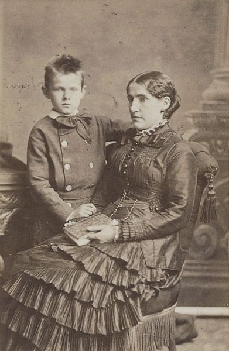
Kee Vos-Stricker with her son Jan c. 1879-1880
Rooftops, View from the Atelier The Hague, 1882, private collection
Emerging artist
Nuenen and Antwerp (1883-1886)
In Nuenen, Van Gogh focused on painting and drawing. Working outside and very quickly, he completed sketches and paintings of weavers and their cottages. Van Gogh also completed The Parsonage Garden at Nuenen, which was stolen from the Singer Laren in March 2020. From August 1884, Margot Begemann, a neighbour's daughter ten years his senior, joined him on his forays; she fell in love and he reciprocated, though less enthusiastically. They wanted to marry, but neither side of their families were in favour. Margot was distraught and took an overdose of strychnine, but survived after Van Gogh rushed her to a nearby hospital. On 26 March 1885, his father died of a heart attack.
Van Gogh painted several groups of still lifes in 1885. During his two-year stay in Nuenen, he completed numerous drawings and watercolours and nearly 200 oil paintings. His palette consisted mainly of sombre earth tones, particularly dark brown, and showed no sign of the vivid colours that distinguished his later work.
There was interest from a dealer in Paris early in 1885. Theo asked Vincent if he had paintings ready to exhibit. In May, Van Gogh responded with his first major work, The Potato Eaters, and a series of peasant character studies which were the culmination of several years of work. When he complained that Theo was not making enough effort to sell his paintings in Paris, his brother responded that they were too dark and not in keeping with the bright style of Impressionism. In August his work was publicly exhibited for the first time, in the shop windows of the dealer Leurs in The Hague. One of his young peasant sitters became pregnant in September 1885; Van Gogh was accused of forcing himself upon her, and the village priest forbade parishioners to model for him.
He moved to Antwerp that November and rented a room above a paint dealer's shop in the rue des Images (Lange Beeldekensstraat). He lived in poverty and ate poorly, preferring to spend the money Theo sent on painting materials and models. Bread, coffee and tobacco became his staple diet. In February 1886, he wrote to Theo that he could only remember eating six hot meals since the previous May. His teeth became loose and painful. In Antwerp he applied himself to the study of colour theory and spent time in museums—particularly studying the work of Peter Paul Rubens—and broadened his palette to include carmine, cobalt blue and emerald green. Van Gogh bought Japanese ukiyo-e woodcuts in the docklands, later incorporating elements of their style into the background of some of his paintings. He was drinking heavily again, and was hospitalised between February and March 1886, when he was possibly also treated for syphilis.[note 6]
After his recovery, despite his antipathy towards academic teaching, he took the higher-level admission exams at the Academy of Fine Arts in Antwerp and, in January 1886, matriculated in painting and drawing. He became ill and run down by overwork, poor diet and excessive smoking. He started to attend drawing classes after plaster models at the Antwerp Academy on 18 January 1886. He quickly got into trouble with Charles Verlat, the director of the academy and teacher of a painting class, because of his unconventional painting style. Van Gogh had also clashed with the instructor of the drawing class Franz Vinck. Van Gogh finally started to attend the drawing classes after antique plaster models given by Eugène Siberdt. Soon Siberdt and Van Gogh came into conflict when the latter did not comply with Siberdt's requirement that drawings express the contour and concentrate on the line. When Van Gogh was required to draw the Venus of Milo during a drawing class, he produced the limbless, naked torso of a Flemish peasant woman. Siberdt regarded this as defiance against his artistic guidance and made corrections to Van Gogh's drawing with his crayon so vigorously that he tore the paper. Van Gogh then flew into a violent rage and shouted at Siberdt:
'You clearly do not know what a young woman is like, God damn it! A woman must have hips, buttocks, a pelvis in which she can carry a baby!'
According to some accounts, this was the last time Van Gogh attended classes at the academy and he left later for Paris. On 31 March 1886, which was about a month after the confrontation with Siberdt, the teachers of the academy decided that 17 students, including Van Gogh, had to repeat a year. The story that Van Gogh was expelled from the academy by Siberdt is therefore unfounded.
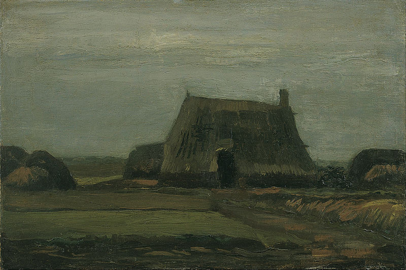
Vincent van Gogh - Farm with stacks of peat
The Potato Eaters, 1885. Van Gogh Museum, Amsterdam
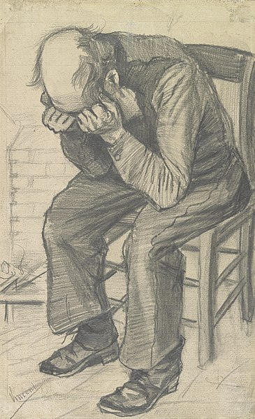
Worn Out, pencil on watercolour paper, 1882. Van Gogh Museum, Amsterdam
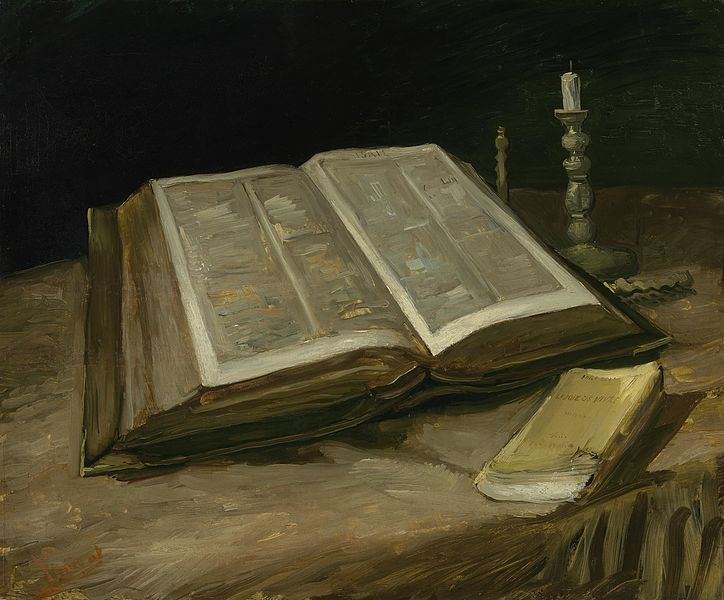
Still Life with Open Bible, Extinguished Candle and Novel, also Still Life with Bible, 1885. Van Gogh Museum, Amsterdam
Skull of a Skeleton with Burning Cigarette, 1885-86. Van Gogh Museum, Amsterdam
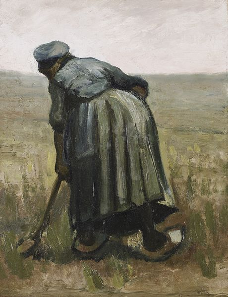
Peasant Woman Digging, or Woman with a Spade, Seen from Behind, 1885. Art Gallery of Ontario, Toronto
Paris (1886-1888)
Van Gogh moved to Paris in March 1886 where he shared Theo's rue Laval apartment in Montmartre and studied at Fernand Cormon's studio. In June the brothers took a larger flat at 54 rue Lepic. In Paris, Vincent painted portraits of friends and acquaintances, still life paintings, views of Le Moulin de la Galette, scenes in Montmartre, Asnières and along the Seine. In 1885 in Antwerp he had become interested in Japanese ukiyo-e woodblock prints and had used them to decorate the walls of his studio; while in Paris he collected hundreds of them. He tried his hand at Japonaiserie, tracing a figure from a reproduction on the cover of the magazine Paris Illustre, The Courtesan or Oiran (1887), after Keisai Eisen, which he then graphically enlarged in a painting.
After seeing the portrait of Adolphe Monticelli at the Galerie Delareybarette, Van Gogh adopted a brighter palette and a bolder attack, particularly in paintings such as his Seascape at Saintes-Maries (1888). Two years later, Vincent and Theo paid for the publication of a book on Monticelli paintings, and Vincent bought some of Monticelli's works to add to his collection.
Van Gogh learned about Fernand Cormon's atelier from Theo. He worked at the studio in April and May 1886, where he frequented the circle of the Australian artist John Peter Russell, who painted his portrait in 1886. Van Gogh also met fellow students Émile Bernard, Louis Anquetin and Henri de Toulouse-Lautrec - who painted a portrait of him in pastel. They met at Julien "Père" Tanguy's paint shop, (which was, at that time, the only place where Paul Cézanne's paintings were displayed). In 1886, two large exhibitions were staged there, showing Pointillism and Neo-impressionism for the first time and bringing attention to Georges Seurat and Paul Signac. Theo kept a stock of Impressionist paintings in his gallery on boulevard Montmartre, but Van Gogh was slow to acknowledge the new developments in art.
Conflicts arose between the brothers. At the end of 1886 Theo found living with Vincent to be "almost unbearable". By early 1887, they were again at peace, and Vincent had moved to Asnières, a northwestern suburb of Paris, where he got to know Signac. He adopted elements of Pointillism, a technique in which a multitude of small coloured dots are applied to the canvas so that when seen from a distance they create an optical blend of hues. The style stresses the ability of complementary colours - including blue and orange - to form vibrant contrasts.
While in Asnières Van Gogh painted parks, restaurants and the Seine, including Bridges across the Seine at Asnières. In November 1887, Theo and Vincent befriended Paul Gauguin who had just arrived in Paris. Towards the end of the year, Vincent arranged an exhibition alongside Bernard, Anquetin, and probably Toulouse-Lautrec, at the Grand-Bouillon Restaurant du Chalet, 43 avenue de Clichy, Montmartre. In a contemporary account, Bernard wrote that the exhibition was ahead of anything else in Paris. There, Bernard and Anquetin sold their first paintings, and Van Gogh exchanged work with Gauguin. Discussions on art, artists, and their social situations started during this exhibition, continued and expanded to include visitors to the show, like Camille Pissarro and his son Lucien, Signac and Seurat. In February 1888, feeling worn out from life in Paris, Van Gogh left, having painted more than 200 paintings during his two years there. Hours before his departure, accompanied by Theo, he paid his first and only visit to Seurat in his studio.
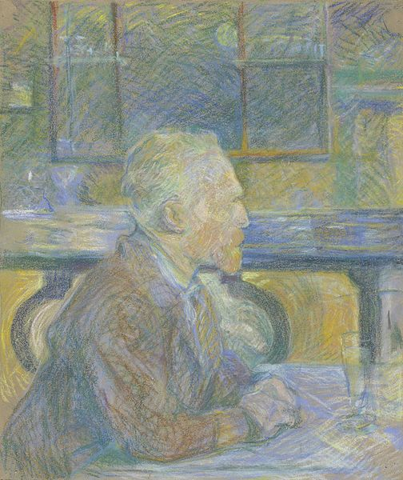
Henri de Toulouse-Lautrec, Portrait of Vincent van Gogh, 1887, pastel drawing, Van Gogh Museum, Amsterdam
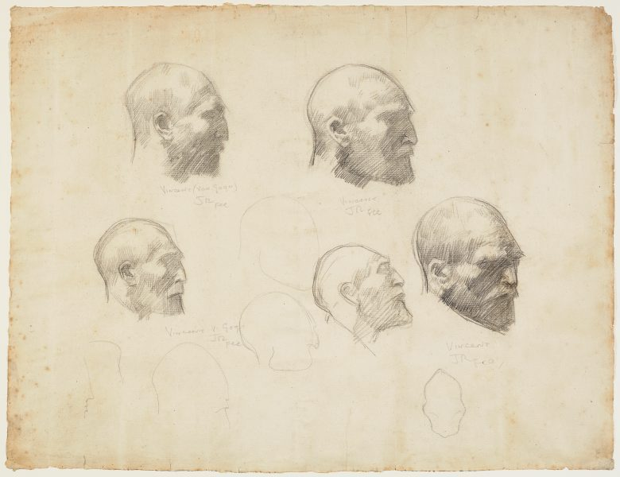
John Peter Russell drew these five studies of Van Gogh a year or so after painting his 1886 portrait (studies, Art Gallery of New South Wales, Sydney).
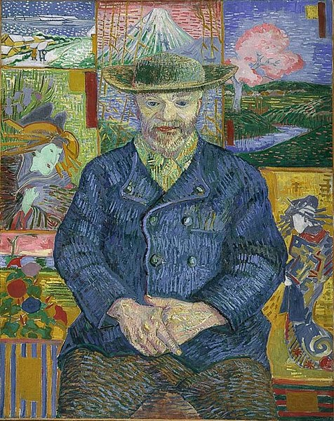
Portrait of Père Tanguy, 1887. Musée Rodin, Paris
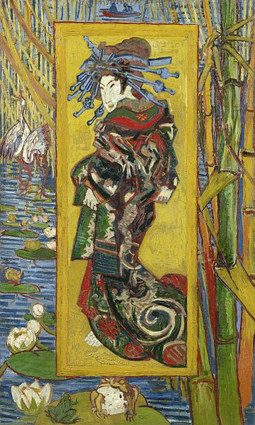
Courtesan (after Eisen), 1887. Van Gogh Museum, Amsterdam
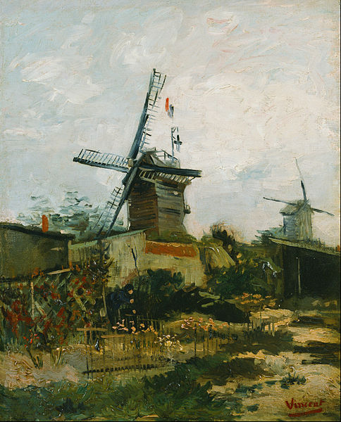
Le Moulin de Blute-Fin (1886) from the Le Moulin de la Galette and Montmartre series'. Bridgestone Museum of Art, Tokyo (F273)
Artistic breakthrough
Arles (1888-1889)
Ill from drink and suffering from smoker's cough, in February 1888 Van Gogh sought refuge in Arles. He seems to have moved with thoughts of founding an art colony. The Danish artist Christian Mourier-Petersen became his companion for two months, and, at first, Arles appeared exotic. In a letter, he described it as a foreign country: "The Zouaves, the brothels, the adorable little Arlésienne going to her First Communion, the priest in his surplice, who looks like a dangerous rhinoceros, the people drinking absinthe, all seem to me creatures from another world."
The time in Arles became one of Van Gogh's more prolific periods: he completed 200 paintings and more than 100 drawings and watercolours. He was enchanted by the local countryside and light; his works from this period are rich in yellow, ultramarine and mauve. They include harvests, wheat fields and general rural landmarks from the area, including The Old Mill (1888), one of seven canvases sent to Pont-Aven on 4 October 1888 in an exchange of works with Paul Gauguin, Émile Bernard, Charles Laval and others. The portrayals of Arles are informed by his Dutch upbringing; the patchworks of fields and avenues are flat and lacking perspective, but excel in their use of colour.
In March 1888 he painted landscapes using a gridded "perspective frame"; three of the works were shown at the annual exhibition of the Société des Artistes Indépendants. In April, he was visited by the American artist Dodge MacKnight, who was living nearby at Fontvieille. On 1 May 1888, for 15 francs per month, he signed a lease for the eastern wing of the Yellow House at 2 place Lamartine. The rooms were unfurnished and had been uninhabited for months.
On 7 May, Van Gogh moved from the Hôtel Carrel to the Café de la Gare, having befriended the proprietors, Joseph and Marie Ginoux. The Yellow House had to be furnished before he could fully move in, but he was able to use it as a studio. He wanted a gallery to display his work and started a series of paintings that eventually included Van Gogh's Chair (1888), Bedroom in Arles (1888), The Night Café (1888), Café Terrace at Night (September 1888), Starry Night Over the Rhone (1888), and Still Life: Vase with Twelve Sunflowers (1888), all intended for the decoration for the Yellow House.
Van Gogh wrote that with The Night Café he tried "to express the idea that the café is a place where one can ruin oneself, go mad, or commit a crime". When he visited Saintes-Maries-de-la-Mer in June, he gave lessons to a Zouave second lieutenant - Paul-Eugène Milliet - and painted boats on the sea and the village. MacKnight introduced Van Gogh to Eugène Boch, a Belgian painter who sometimes stayed in Fontvieille, and the two exchanged visits in July.
The Yellow House, 1888. Van Gogh Museum, Amsterdam
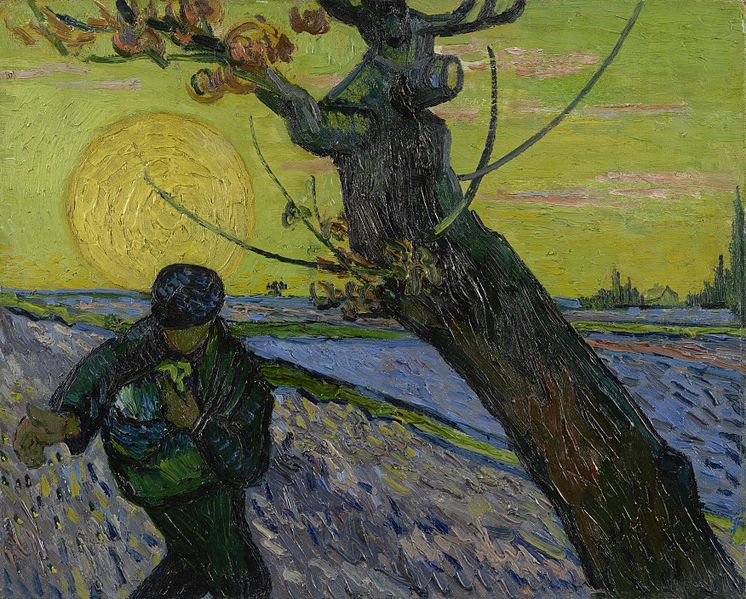
The Sower with Setting Sun, 1888. Van Gogh Museum, Amsterdam
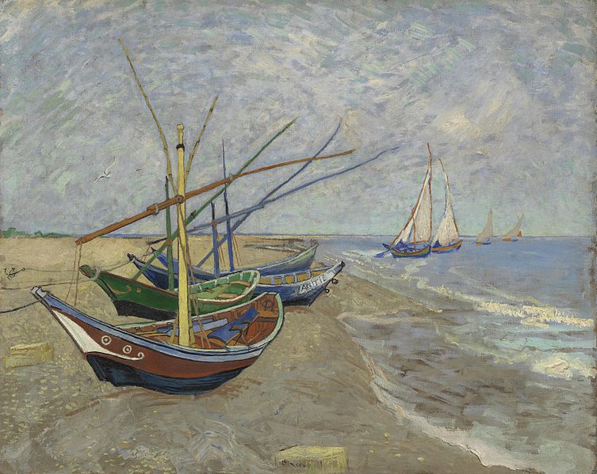
Fishing Boats on the Beach at Saintes-Maries, June 1888. Van Gogh Museum, Amsterdam
Bedroom in Arles, 1888. Van Gogh Museum, Amsterdam
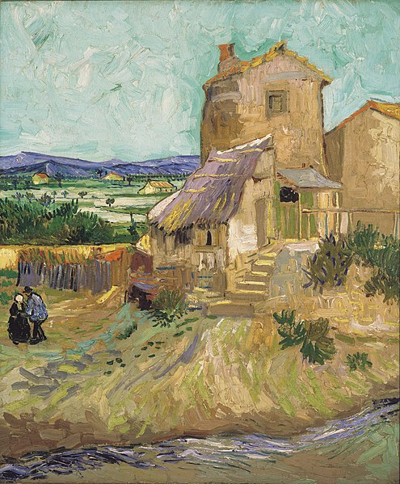
The Old Mill, 1888. Albright-Knox Art Gallery, Buffalo, New York
Gauguin's visit (1888)
When Gauguin agreed to visit Arles in 1888, Van Gogh hoped for friendship and the realisation of his idea of an artists' collective. While waiting, in August he painted Sunflowers. When Boch visited again, Van Gogh painted a portrait of him, as well as the study The Poet Against a Starry Sky.
In preparation for Gauguin's visit, Van Gogh bought two beds on advice from the station's postal supervisor Joseph Roulin, whose portrait he painted. On 17 September, he spent his first night in the still sparsely furnished Yellow House. When Gauguin consented to work and live in Arles with him, Van Gogh started to work on the Décoration for the Yellow House, probably the most ambitious effort he ever undertook. He completed two chair paintings: Van Gogh's Chair and Gauguin's Chair.
After much pleading from Van Gogh, Gauguin arrived in Arles on 23 October and, in November, the two painted together. Gauguin depicted Van Gogh in his The Painter of Sunflowers; Van Gogh painted pictures from memory, following Gauguin's suggestion. Among these "imaginative" paintings is Memory of the Garden at Etten.[note 8] Their first joint outdoor venture was at the Alyscamps, when they produced the pendants Les Alyscamps. The single painting Gauguin completed during his visit was his portrait of Van Gogh.
Van Gogh and Gauguin visited Montpellier in December 1888, where they saw works by Courbet and Delacroix in the Musée Fabre. Their relationship began to deteriorate; Van Gogh admired Gauguin and wanted to be treated as his equal, but Gauguin was arrogant and domineering, which frustrated Van Gogh. They often quarrelled; Van Gogh increasingly feared that Gauguin was going to desert him, and the situation, which Van Gogh described as one of "excessive tension", rapidly headed towards crisis point.
Paul Gauguin, The Painter of Sunflowers: Portrait of Vincent van Gogh, 1888. Van Gogh Museum, Amsterdam
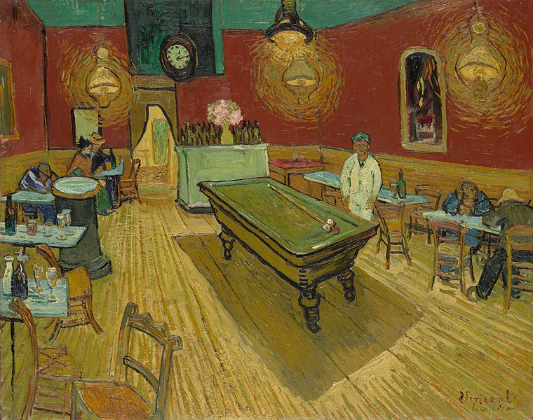
The Night Café, 1888. Yale University Art Gallery, New Haven, Connecticut
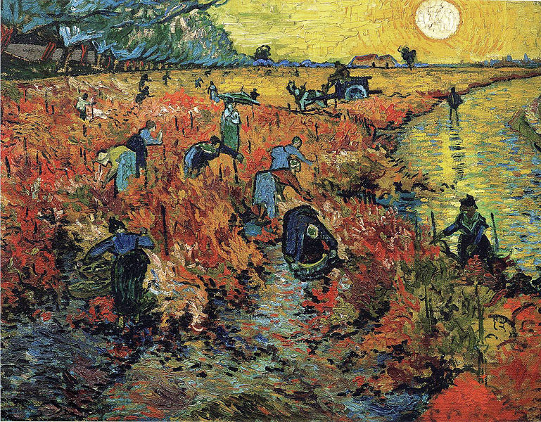
The Red Vineyard, November 1888. Pushkin Museum, Moscow. Sold to Anna Boch, 1890
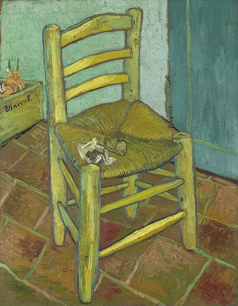
Van Gogh's Chair, 1888. National Gallery, London
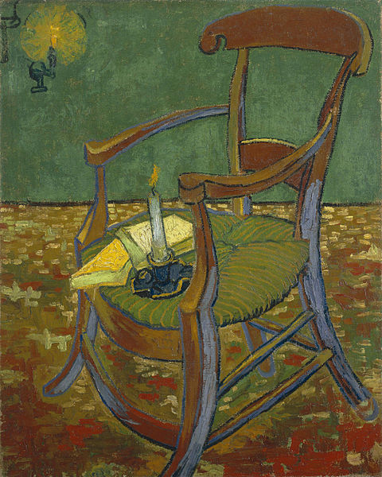
Paul Gauguin's Armchair, 1888. Van Gogh Museum, Amsterdam
Hospital in Arles (December 1888)
The exact sequence of events which led to Van Gogh's mutilation of his ear is not known. Gauguin stated, 15 years later, that the night followed several instances of physically threatening behaviour. Their relationship was complex, and Theo may have owed money to Gauguin, who was suspicious that the brothers were exploiting him financially. It seems likely that Van Gogh had realised that Gauguin was planning to leave. The following days saw heavy rain, leading to the two men being shut in the Yellow House. Gauguin reported that Van Gogh followed when Gauguin left the house for a walk, and "rushed towards me, an open razor in his hand." This account is uncorroborated; Gauguin was almost certainly absent from the Yellow House that night, most likely in a hotel.
After the altercation with Gauguin, in the evening of 23 December 1888 Van Gogh returned to his room, where he was assaulted by voices and severed his left ear with a razor (either wholly or in part; accounts differ),[note 9] causing severe bleeding. He bandaged the wound, wrapped the ear in paper, and delivered the package to a woman at a brothel Van Gogh and Gauguin both frequented. Van Gogh was found unconscious the next morning by a policeman and taken to hospital, where Félix Rey, a young doctor still in training, treated him. The ear was delivered to the hospital, but Rey did not attempt to reattach it as too much time had passed. Van Gogh researcher and art historian Bernadette Murphy discovered the true identity of the woman named Gabrielle, who died in Arles at age 80 in 1952, and whose descendants still live just outside Arles. Gabrielle, known in her youth as "Gaby," was a 17-year-old cleaning girl at the brothel and other local establishments at the time Van Gogh presented her with his ear.
Van Gogh had no recollection of the event, suggesting that he may have suffered an acute mental breakdown. The hospital diagnosis was "acute mania with generalised delirium", and within a few days the local police ordered that he be placed in hospital care. Gauguin immediately notified Theo, who on 24 December had proposed marriage to his old friend Andries Bonger's sister Johanna. That evening Theo rushed to the station to board a night train to Arles. He arrived on Christmas Day and comforted Vincent, who seemed to be semi-lucid. That evening he left Arles for the return trip to Paris.
During the first days of his treatment, Van Gogh repeatedly and unsuccessfully asked for Gauguin, who asked a policeman attending the case to "be kind enough, Monsieur, to awaken this man with great care, and if he asks for me tell him I have left for Paris; the sight of me might prove fatal for him." Gauguin fled Arles, never to see Van Gogh again. They continued to correspond and in 1890 Gauguin proposed they form a studio in Antwerp. Meanwhile, other visitors to the hospital included Marie Ginoux and Roulin.
Despite a pessimistic diagnosis, Van Gogh recovered and returned to the Yellow House on 7 January 1889. He spent the following month between hospital and home, suffering from hallucinations and delusions of poisoning. In March, the police closed his house after a petition by 30 townspeople (including the Ginoux family) who described him as "le fou roux" (the redheaded madman); Van Gogh returned to hospital. Paul Signac visited him twice in March; in April Van Gogh moved into rooms owned by Dr Rey after floods damaged paintings in his own home. Two months later, he left Arles and voluntarily entered an asylum in Saint-Rémy-de-Provence. Around this time, he wrote, "Sometimes moods of indescribable anguish, sometimes moments when the veil of time and fatality of circumstances seemed to be torn apart for an instant."
Van Gogh gave his 1889 Portrait of Doctor Félix Rey to Dr Rey. The physician was not fond of the painting and used it to repair a chicken coop, then gave it away. In 2016, the portrait was housed at the Pushkin Museum of Fine Arts and estimated to be worth over $50 million.
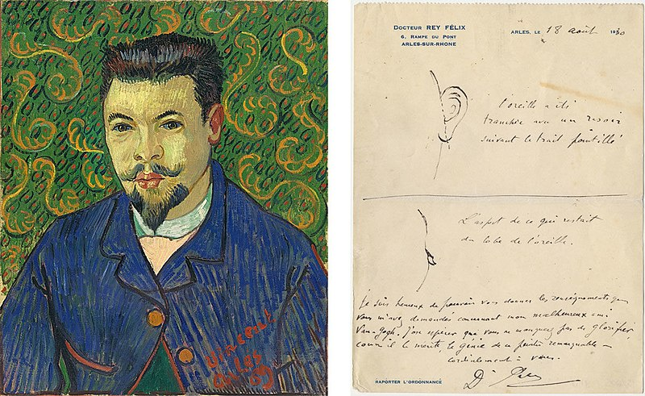
Portrait of Félix Rey, January 1889, Pushkin Museum; note written by Dr Rey for novelist Irving Stone with sketches of the damage to van Gogh's ear
Local newspaper report dated 30 December 1888 recording Van Gogh's self-mutilation.
Self-portrait with Bandaged Ear and Pipe, 1889, private collection
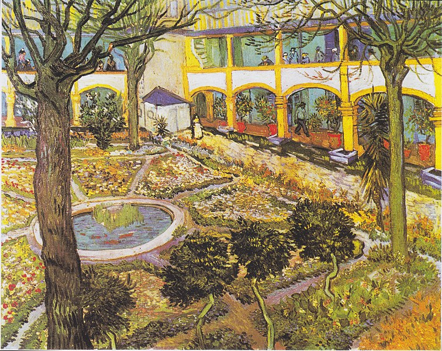
The Courtyard of the Hospital at Arles, 1889, Oskar Reinhart Collection "Am Römerholz", Winterthur, Switzerland
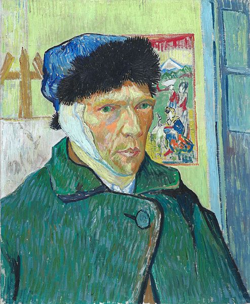
Self-portrait with Bandaged Ear, 1889, Courtauld Institute of Art, London
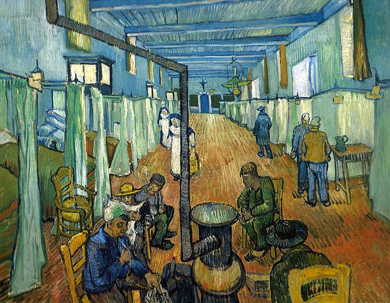
Ward in the Hospital in Arles, 1889, Oskar Reinhart Collection "Am Römerholz", Winterthur, Switzerland
Saint-Rémy (May 1889 - May 1890)
Van Gogh entered the Saint-Paul-de-Mausole asylum on 8 May 1889, accompanied by his caregiver, Frédéric Salles, a Protestant clergyman. Saint-Paul was a former monastery in Saint-Rémy, located less than 30 kilometres (19 mi) from Arles, and it was run by a former naval doctor, Théophile Peyron. Van Gogh had two cells with barred windows, one of which he used as a studio. The clinic and its garden became the main subjects of his paintings. He made several studies of the hospital's interiors, such as Vestibule of the Asylum and Saint-Rémy (September 1889), and its gardens, such as Lilacs (May 1889). Some of his works from this time are characterised by swirls, such as The Starry Night. He was allowed short supervised walks, during which time he painted cypresses and olive trees, including Valley with Ploughman Seen from Above, Olive Trees with the Alpilles in the Background 1889, Cypresses 1889, Cornfield with Cypresses (1889), Country road in Provence by Night (1890). In September 1889 he produced two further versions of Bedroom in Arles.
Limited access to life outside the clinic resulted in a shortage of subject matter. Van Gogh instead worked on interpretations of other artist's paintings, such as Millet's The Sower and Noonday Rest, and variations on his own earlier work. Van Gogh was an admirer of the Realism of Jules Breton, Gustave Courbet and Millet, and he compared his copies to a musician's interpreting Beethoven.
His Prisoners' Round (after Gustave Doré) (1890) was painted after an engraving by Gustave Doré (1832-1883). Tralbaut suggests that the face of the prisoner in the centre of the painting looking towards the viewer is Van Gogh himself; Jan Hulsker discounts this.
Between February and April 1890, Van Gogh suffered a severe relapse. Depressed and unable to bring himself to write, he was still able to paint and draw a little during this time, and he later wrote to Theo that he had made a few small canvases "from memory ... reminisces of the North". Among these was Two Peasant Women Digging in a Snow-Covered Field at Sunset. Hulsker believes that this small group of paintings formed the nucleus of many drawings and study sheets depicting landscapes and figures that Van Gogh worked on during this time. He comments that this short period was the only time that Van Gogh's illness had a significant effect on his work. Van Gogh asked his mother and his brother to send him drawings and rough work he had done in the early 1880s so he could work on new paintings from his old sketches. Belonging to this period is Sorrowing Old Man ("At Eternity's Gate"), a colour study Hulsker describes as "another unmistakable remembrance of times long past". His late paintings show an artist at the height of his abilities, according to the art critic Robert Hughes, "longing for concision and grace".
After the birth of his nephew, Van Gogh wrote, "I started right away to make a picture for him, to hang in their bedroom, branches of white almond blossom against a blue sky."
The Starry Night, June 1889. Museum of Modern Art, New York
The Sower, (after Jean-François Millet), 1888. Kröller-Müller Museum, Otterlo
Two Peasant Women Digging in a Snow-Covered Field at Sunset, (after Jean-François Millet), 1890. Foundation E.G. Bührle Collection, Zurich, Switzerland
Sorrowing Old Man ('At Eternity's Gate'), 1890. Kröller-Müller Museum, Otterlo
Exhibitions and Recognition
Albert Aurier praised his work in the Mercure de France in January 1890 and described him as "a genius". In February, Van Gogh painted five versions of L'Arlésienne (Madame Ginoux), based on a charcoal sketch Gauguin had produced when she sat for both artists in November 1888.[note 10] Also in February, Van Gogh was invited by Les XX, a society of avant-garde painters in Brussels, to participate in their annual exhibition. At the opening dinner a Les XX member, Henry de Groux, insulted Van Gogh's work. Toulouse-Lautrec demanded satisfaction, and Signac declared he would continue to fight for Van Gogh's honour if Lautrec surrendered. De Groux apologised for the slight and left the group.
From 20 March to 27 April 1890, Van Gogh was included in the sixth exhibition of the Société des Artistes Indépendants in the Pavillon de la Ville de Paris on the Champs-Elysées. Van Gogh exhibited ten paintings. Eight of these can be identified as Cypresses (F 613 / JH 1746 ), Road menders ('The tall plane trees') (F 657 / JH 1860 ), Ravine (F 662 / JH 1804 ), Avenue of chestnut trees in blossom (F 517 / JH 1689 ), Mulberry tree (F 637 / JH 1796 ), Trees with ivy in the garden of the asylum (F 609 / JH 1693 ), Wheatfield at sunrise (F 737 / JH 1862 ). 'Les Tournesols' is either Sunflowers in a vase (F 454 / JH 1562 ) or Sunflowers in a vase (F 456 / JH 1561 ) Wheatfield after a storm (F 611 / JH 1723 ) and Olive grove (F 586 / JH 1854 ).
While Van Gogh's exhibit was on display with the Artistes Indépendants in Paris, Claude Monet said that his work was the best in the show.
Auvers-sur-Oise (May-July 1890)
In May 1890, Van Gogh left the clinic in Saint-Rémy to move nearer to both Dr Paul Gachet in the Paris suburb of Auvers-sur-Oise and to Theo. Gachet was an amateur painter and had treated several other artists - Camille Pissarro had recommended him. Van Gogh's first impression was that Gachet was "iller than I am, it seemed to me, or let's say just as much."
The painter Charles Daubigny moved to Auvers in 1861 and in turn drew other artists there, including Camille Corot and Honoré Daumier. In July 1890, Van Gogh completed two paintings of Daubigny's Garden, one of which is likely his final work.
During his last weeks at Saint-Rémy, his thoughts returned to "memories of the North", and several of the approximately 70 oils, painted during as many days in Auvers-sur-Oise, are reminiscent of northern scenes. In June 1890, he painted several portraits of his doctor, including Portrait of Dr Gachet, and his only etching. In each the emphasis is on Gachet's melancholic disposition. There are other paintings which are probably unfinished, including Thatched Cottages by a Hill.
In July, Van Gogh wrote that he had become absorbed "in the immense plain against the hills, boundless as the sea, delicate yellow". He had first become captivated by the fields in May, when the wheat was young and green. In July, he described to Theo "vast fields of wheat under turbulent skies".
He wrote that they represented his "sadness and extreme loneliness" and that the "canvases will tell you what I cannot say in words, that is, how healthy and invigorating I find the countryside". Wheatfield with Crows, although not his last oil work, is from July 1890 and Hulsker discusses it as being associated with "melancholy and extreme loneliness". Hulsker identifies seven oil paintings from Auvers that follow the completion of Wheatfield with Crows.
Research published in 2020 by senior researchers at the museum Louis van Tilborgh and Teio Meedendorp, reviewing findings of Wouter van der Veen, the scientific director of the Institut Van Gogh, concluded that it was "highly plausible" that the exact location where Van Gogh's final work Tree Roots was some 150 metres (490 ft) from the Auberge Ravoux inn where he was staying, where a stand of trees with a tangle of gnarled roots grew on a hillside. These trees with gnarled roots are shown in a postcard from 1900 to 1910. Mr Van der Veen believes Van Gogh may have been working on the painting just hours before his death.
White House at Night, 1890. Hermitage Museum, St Petersburg, painted six weeks before the artist's death
Tree Roots, July 1890, Van Gogh Museum, Amsterdam
The Church at Auvers, 1890. Musée d'Orsay, Paris
Death
On 27 July 1890, aged 37, Van Gogh is believed to have shot himself in the chest with a 7mm Lefaucheux pinfire revolver. There were no witnesses and he died 30 hours after the incident. The shooting may have taken place in the wheat field in which he had been painting, or a local barn. The bullet was deflected by a rib and passed through his chest without doing apparent damage to internal organs - probably stopped by his spine. He was able to walk back to the Auberge Ravoux, where he was attended to by two doctors, but without a surgeon present the bullet could not be removed. The doctors tended to him as well as they could, then left him alone in his room, smoking his pipe. The following morning, Theo rushed to his brother's side, finding him in good spirits. But within hours Vincent's health began to fail, suffering from an untreated infection resulting from the wound. He died in the early hours of 29 July. According to Theo, Vincent's last words were: "The sadness will last forever".
Van Gogh was buried on 30 July, in the municipal cemetery of Auvers-sur-Oise. The funeral was attended by Theo van Gogh, Andries Bonger, Charles Laval, Lucien Pissarro, Émile Bernard, Julien Tanguy and Paul Gachet, among twenty family members, friends and locals. Theo had been ill, and his health began to decline further after his brother's death. Weak and unable to come to terms with Vincent's absence, he died on 25 January 1891 at Den Dolder and was buried in Utrecht. In 1914, Johanna van Gogh-Bonger had Theo's body exhumed and moved from Utrecht to be re-buried alongside Vincent's at Auvers-sur-Oise.
There have been numerous debates as to the nature of Van Gogh's illness and its effect on his work, and many retrospective diagnoses have been proposed. The consensus is that Van Gogh had an episodic condition with periods of normal functioning. Perry was the first to suggest bipolar disorder in 1947, and this has been supported by the psychiatrists Hemphill and Blumer. Biochemist Wilfred Arnold has countered that the symptoms are more consistent with acute intermittent porphyria, noting that the popular link between bipolar disorder and creativity might be spurious. Temporal lobe epilepsy with bouts of depression has also been suggested. Whatever the diagnosis, his condition was likely worsened by malnutrition, overwork, insomnia and alcohol.
The gun Van Gogh was reputed to have used was rediscovered in 1965 and was auctioned, on 19 June 2019, as "the most famous weapon in art history". The gun sold for €162,500 (£144,000; $182,000), almost three times more than expected.
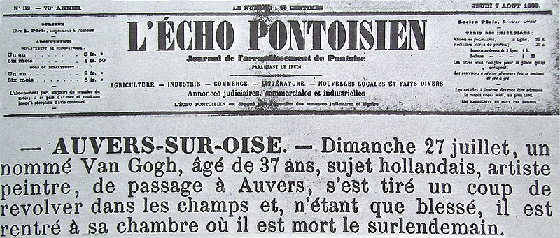
Article on Van Gogh's death from L'Écho Pontoisien, 7 August 1890
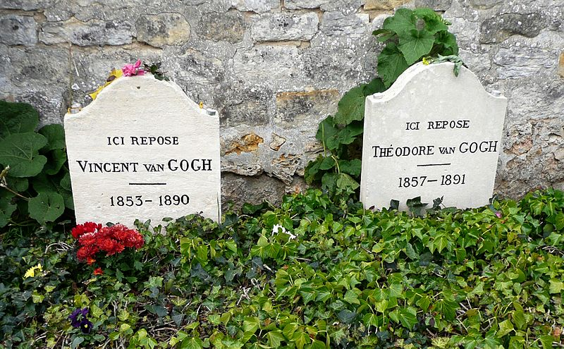
Vincent and Theo's graves at Auvers-sur-Oise Cemetery


.jpg)


_-_30_December_1888_-_Vincent_van_Gogh_ear_incident.jpg)


.jpg)